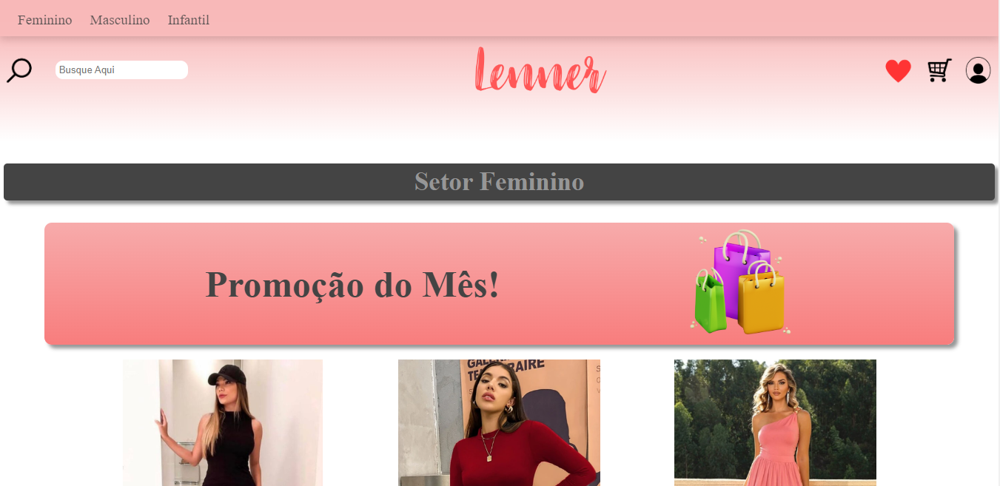
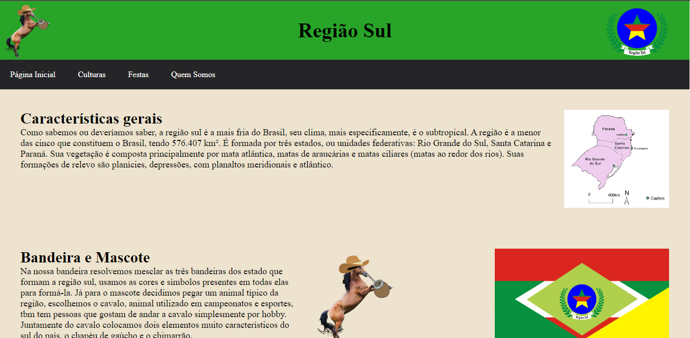
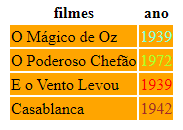
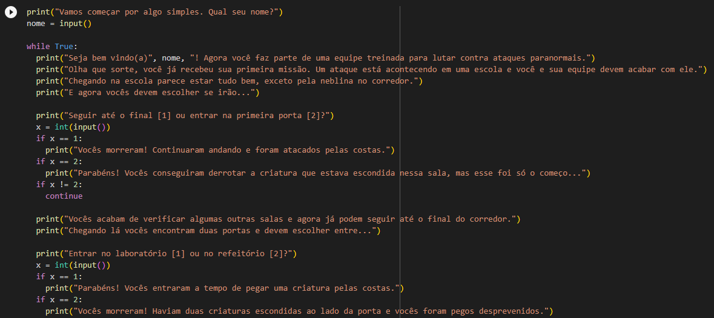
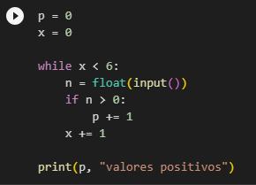
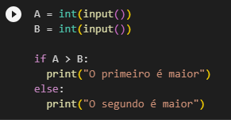

Projetos
Lenner
Para esse projeto, foi proposto pela professora Paula que criássemos um site com o tema que quiséssemos de forma individual. Isso tinha como objetivo treinar tudo que aprendemos até agora nas aulas de HTML e CSS.
Região Sul
Este site foi feito a partir do projeto trimestral sobre brasilidades, feito em grupos. O tema era regiões do Brasil, e a partir de um sorteio meu grupo precisou fazer sobre a Região Sul.
Tabela
Esta tabela foi proposta pela professora Paula quando ainda estávamos começando a criar códigos. Nessa atividade aprendemos a criar uma tabela e colorir ele e os textos.
Jogo
Proposto pelo professor Guilherme, este trabalho tinha a intenção de treinar tudo que aprendemos em suas aulas de Python com a criação de um jogo com diferentes fases.
Valores Positivos
Esta atividade tinha como objetivo treinar o uso da função "while" que tínhamos acabado de aprender. Para isso, precisávamos procurar entre os valores digitados os valores positivos existentes.
Comparação de Valores
Esta outra atividade foi feita para treinar o uso da função "if" e "else". Nela precisávamos comparar se um número era maior ou menor que o outro.